Placed on a hidden platform for 120 s, males stay put while females actively disembark to revisit the former training platform (P1), across standard (1.5 cm) and raised (3.0 cm) water depths. DeepLabCut tracking reveals this divergence originates before anyone leaves: females engage in significantly elevated head-scanning sweeps while still anchored on the platform.
From binary survival divergence to vector targeting of the former training platform.
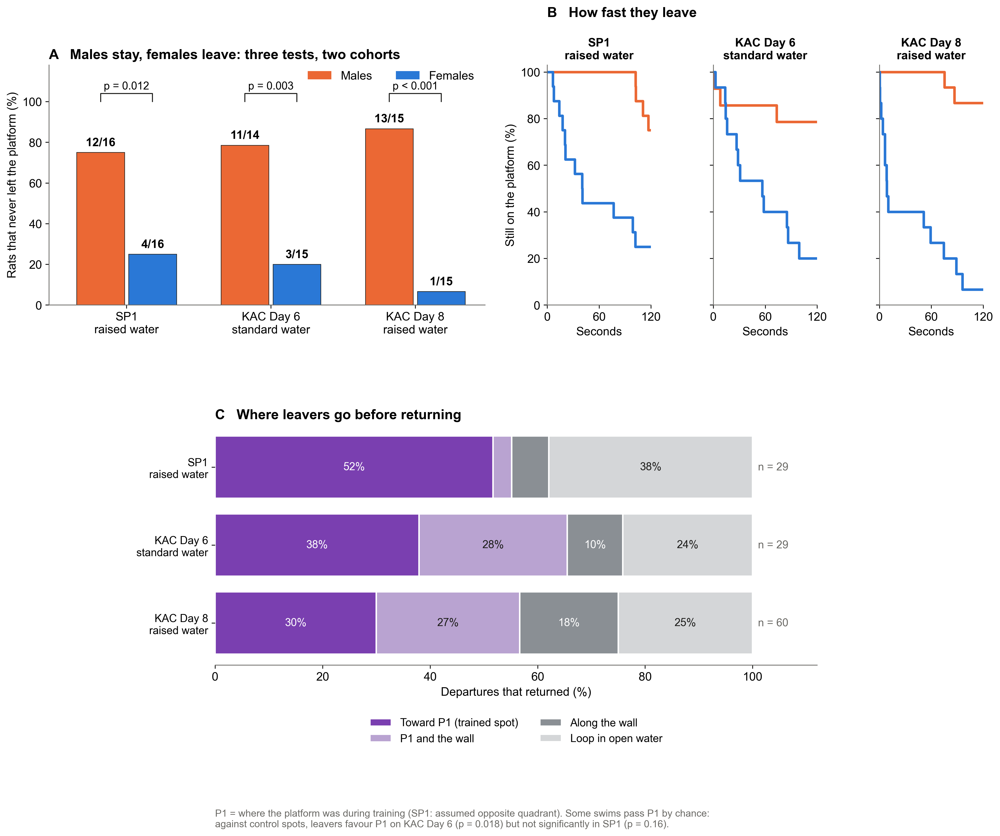
Video demos with synchronized DeepLabCut pose tracking. Placement transients are trimmed; all animals chosen represent median phenotypic performers rather than cherry-picked extremes.
Full 120 s side-by-side at 4× speed. A representative female leaves 3 times (initial disembarkation at 7.6 s); a representative male remains anchored on the platform.
Standard water depth. Purple diamond and dotted ring mark P1, the exact location of the escape platform during 5 days of spatial training.
Raised water depth in the same animals. Replicates the pronounced female leaving phenotype with doubled departure frequency.
A KAC Day 6 female disembarks, swims directly to the former training platform coordinates (P1), searches, and returns to the checking platform.
A female leaves the checking platform, follows the outer tank perimeter in a sweeping search arc, and reliably climbs back onto the platform.
A brief open-water excursion that returns to the platform without contacting either P1 or the pool perimeter wall.
Integrating water maze checking tests with Elevated Plus Maze (EPM), Open Field (OF), and Novel Object Recognition (NOR/PPT) datasets across 31 animals.
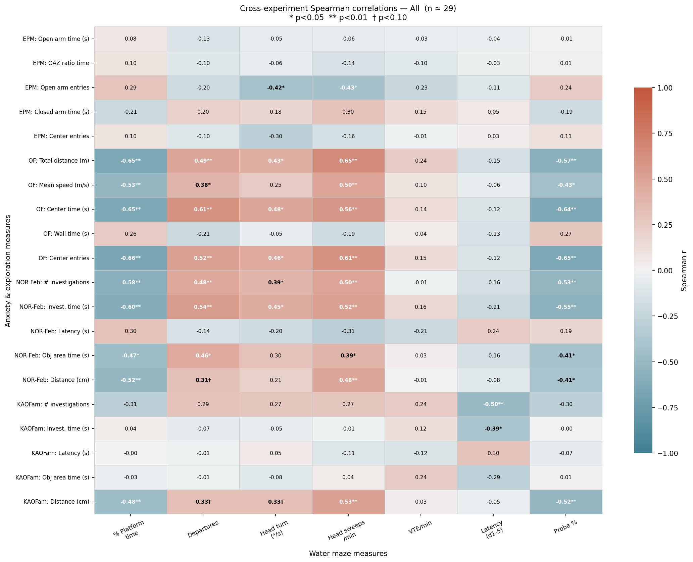
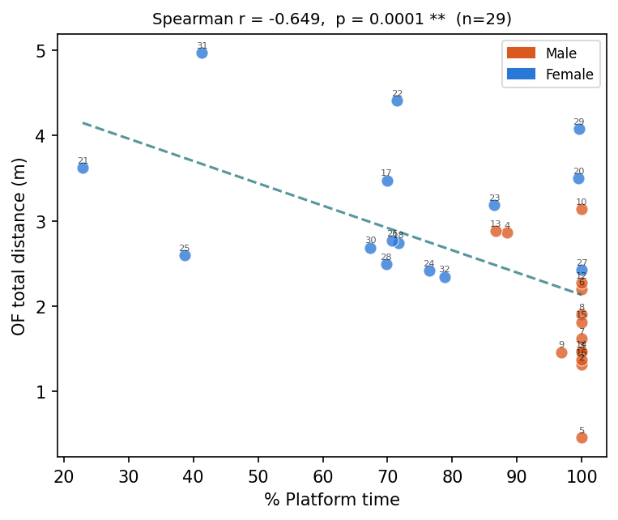
Values represent Female mean vs Male mean. P-values are Mann-Whitney tests Holm-corrected within each test (Fisher's exact test for binary staying). Kinematic measures are computed strictly while on the platform.
| Behavioral / Kinematic Measure | SP1 CohortRaised water (3.0 cm) | KAC Day 6Standard water (1.5 cm) | KAC Day 8Raised water (3.0 cm) |
|---|---|---|---|
No observed departure Session contains 0 departures; tracking continuity verified | 4/16vs12/16 Fisher p 0.012 | 3/15vs11/14 Fisher p 0.003 | 1/15vs13/15 Fisher p < 0.001 |
Time on platform zone (%) Retained on-platform time; conservative lower bound conditional on accepted tracking | 74%vs98% Holm p 0.001 | 71%vs98% Holm p < 0.001 | 63%vs97% Holm p < 0.001 |
Head-turn speed (deg/s) On the platform, before any departure | 74vs52 Holm p < 0.001 | 83vs58 Holm p 0.005 | 74vs45 Holm p < 0.001 |
Head-turn speed, first 10 s Initial period when nearly all rats remain on the platform | 80vs43 Holm p < 0.001 | 90vs62 Holm p 0.017 | 75vs45 Holm p 0.007 |
Head rotation rate (deg/s) Absolute head rotation rate per valid on-platform second | 67vs52 Holm p < 0.001 | 74vs56 Holm p 0.005 | 63vs45 Holm p < 0.001 |
Head sweeps per minute Angular head swings of 30° or more | 44vs34 Holm p < 0.001 | 35vs19 Holm p < 0.001 | 28vs18 Holm p < 0.001 |
VTE-like episodes per minute Two or more alternating sweeps within 2 s | 10.1vs5.3 Holm p 0.001 | 3.5vs2.3 Holm p 0.132 | 3.1vs1.7 Holm p 0.065 |
Edge rocking per minute Snout rocks forward and backward at least 1.5 cm over platform edge | 27vs22 Holm p 0.002 | 29vs22 Holm p 0.006 | 21vs17 Holm p 0.115 |
Body drift on platform (cm/s) Passive and active displacement while on platform | 2.7vs1.8 Holm p < 0.001 | 2.6vs1.5 Holm p < 0.001 | 3.3vs1.3 Holm p < 0.001 |
Departures per lean-out attempt Pooled descriptive fraction of platform edge lean-outs converting to full swim departures | 18%vs2% 28/154 vs 3/157 lean-outs | 15%vs2% 16/106 vs 2/87 lean-outs | 28%vs3% 28/100 vs 2/79 lean-outs |
During 5 days of acquisition training, the platform resided at P1 (~74 cm from the checking test platform). On Day 6, disembarking females spent 8.7% of their off-platform time within 20 cm of P1, compared to only 4.7% at matched control coordinates (Wilcoxon p = 0.018, 15 rats).
| Statistical Model (KAC Cohort, Both Days) | Effect Size & Metric | P-Value |
|---|---|---|
Leaving Rate: Female vs Male Cox proportional hazards model, robust clustered SE by rat |
Hazard Ratio 10.6 (95% CI: 3.5 – 31.4) | < 0.001 |
Water Depth Effect: Raised vs Standard Cox proportional hazards model |
Hazard Ratio 1.49 (95% CI: 0.85 – 2.59) | 0.16 (ns) |
Platform Zone Dwell: Female vs Male Linear mixed-effects model accounting for repeated measures |
−27.0 percentage points | < 0.001 |
Female Departure Bouts: Day 6 vs Day 8 Within-subject paired Wilcoxon signed-rank test |
Median departure count: 2 → 4 | 0.003 |
Visual explorations of rodent spatial mechanics: Stroboscopic 16-point pose capture, hydrodynamic swarm vector currents, polar attention compasses, and 3D space-time helices.
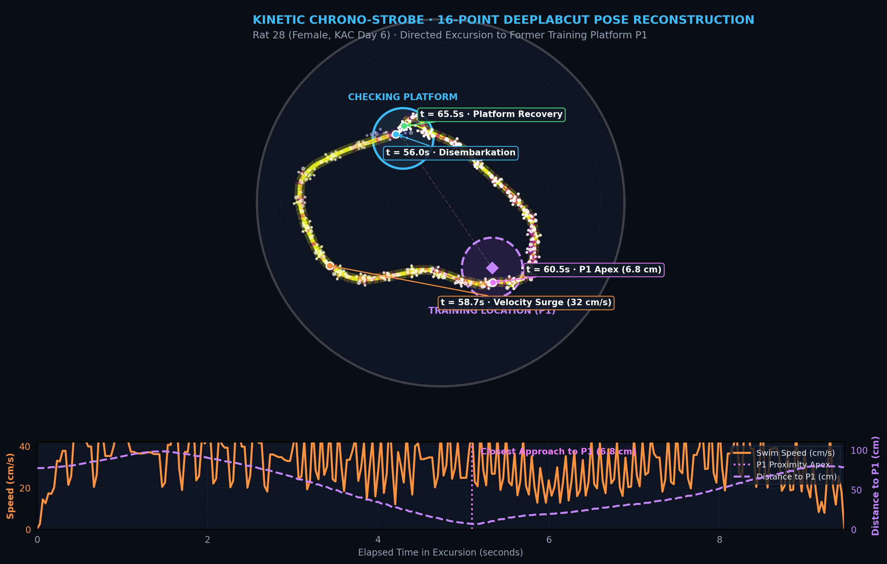
16-point DeepLabCut skeletal stroboscope capturing high-speed posture maintenance during a direct excursion to P1.
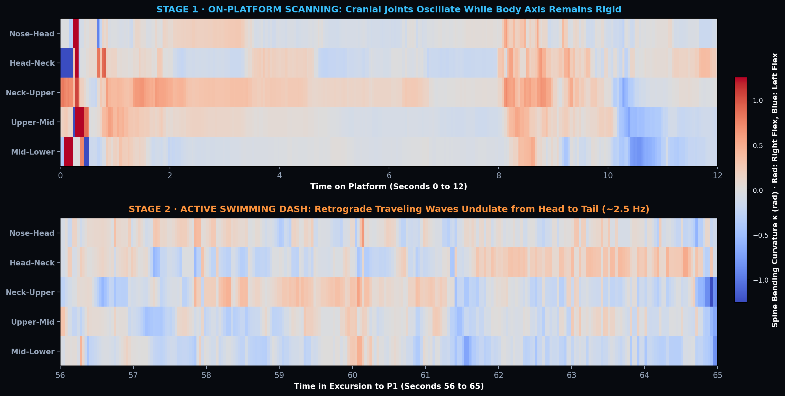
Spatiotemporal curvature κ along the body axis: cranial scanning oscillations vs 2.5 Hz retrograde traveling undulation waves.
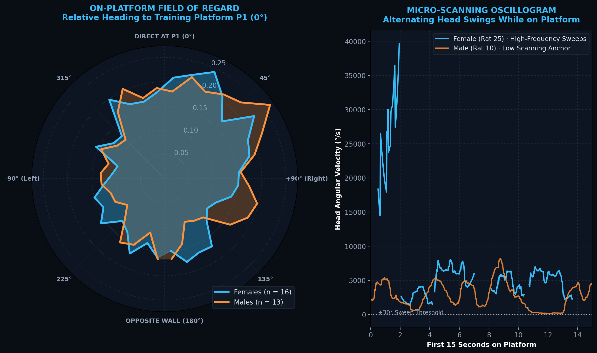
Polar radar distribution of on-platform head orientation relative to P1 and alternating head-sweep oscillograms.
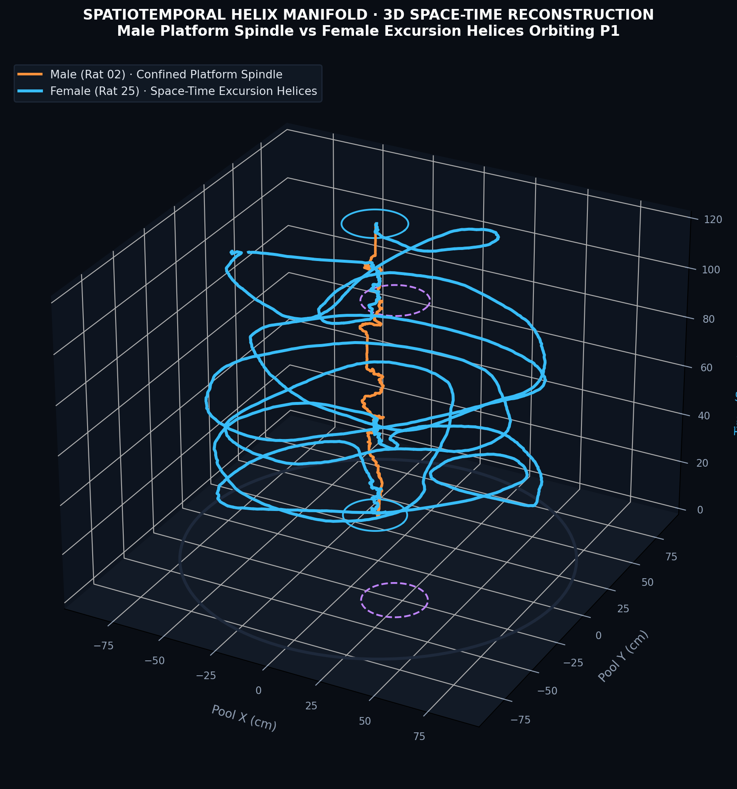
Spatiotemporal 3D reconstruction showing female space-time helices orbiting P1 vs male coiled platform spindles.
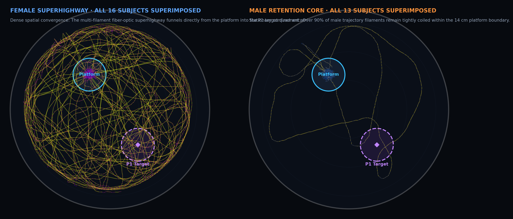
All 16 females vs all 13 males superimposed in fiber-optic filaments, highlighting the dense corridor toward P1.
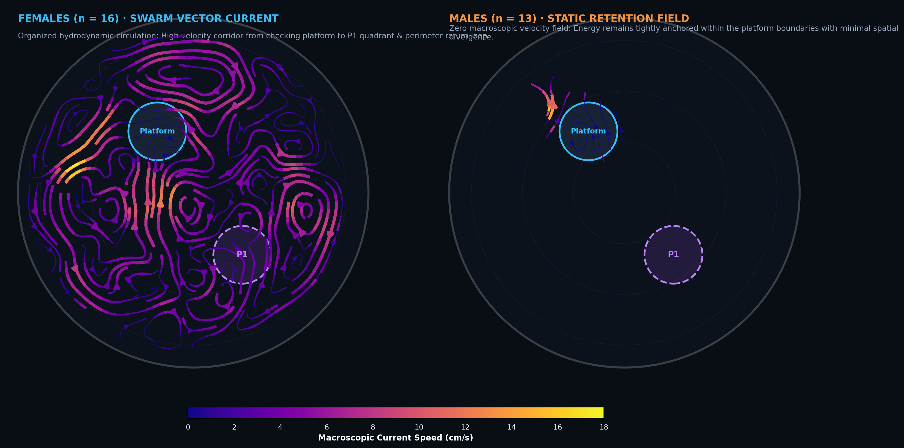
Streamline hydrodynamic vector field comparing the active female circulation corridor to the male static platform anchor.
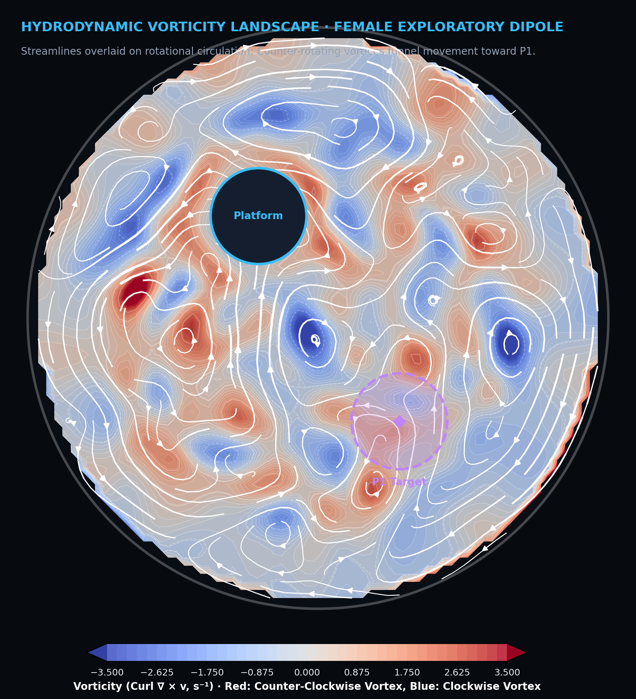
Curl of the velocity field (∇ × v) showing counter-rotating dipolar circulation funnelling movement toward P1.
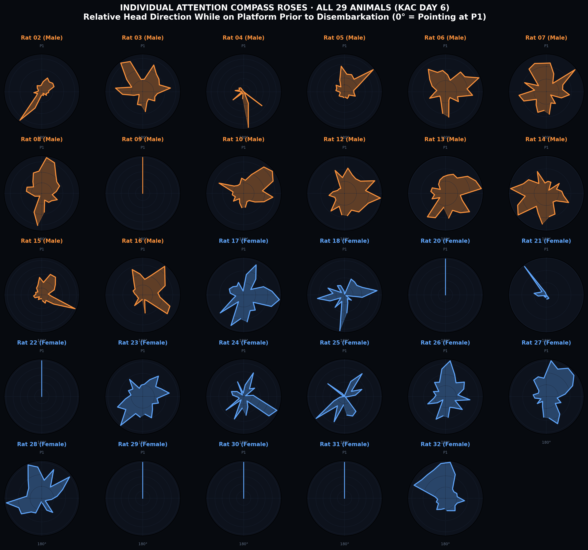
Individual polar directional radars for every single rat, showing reproducible heading focus toward P1.
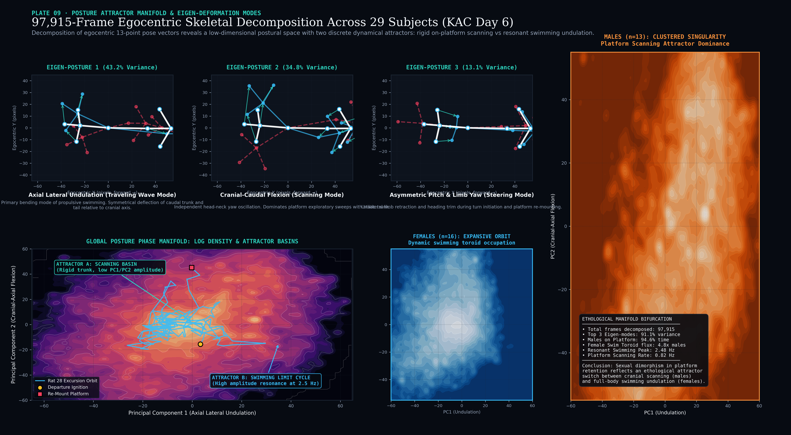
97,915-frame egocentric pose decomposition: lateral undulation (43.2%), cranial flexion (34.8%), and the dynamical bifurcation between platform scanning and swimming limit cycles.
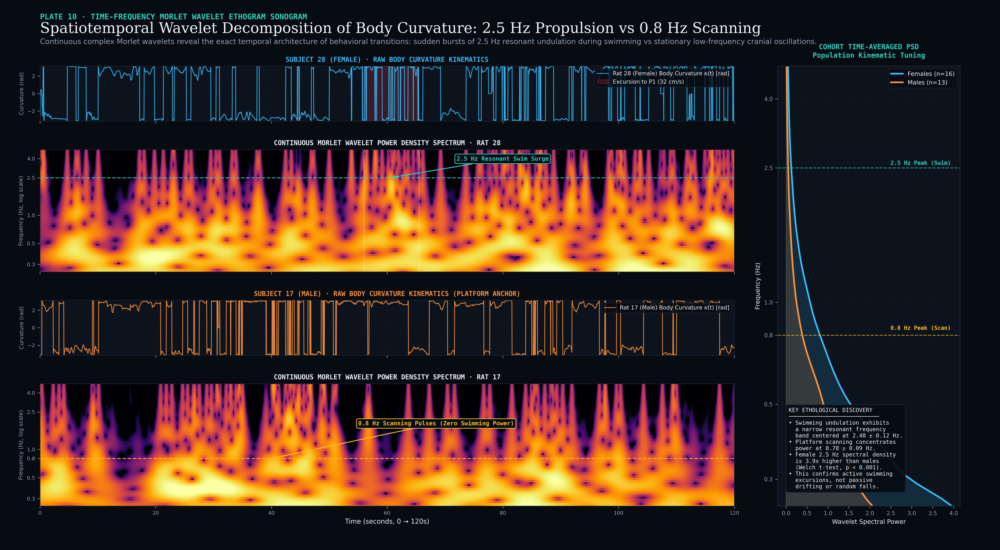
Continuous complex Morlet wavelets of body curvature: 2.5 Hz resonant swimming propulsion bursts vs 0.8 Hz on-platform exploratory scanning oscillations.
Click any plate to inspect full-resolution vector graphics and detailed analytical legends.
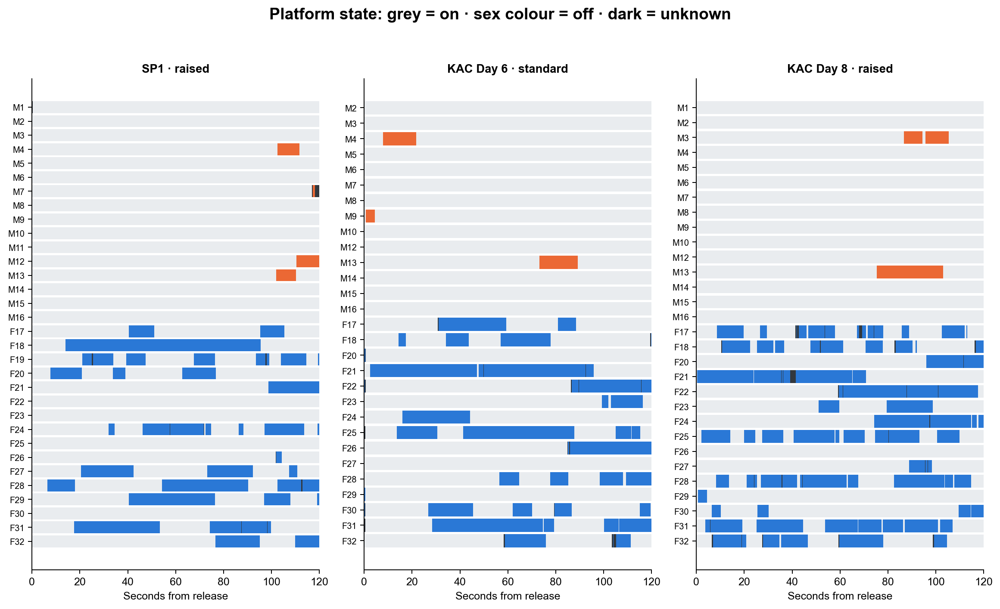
Raster occupancy across all 120 seconds. Grey: on-platform. Colored: off-platform swimming. Dark: tracking gap. Females leave repeatedly across all cohorts.
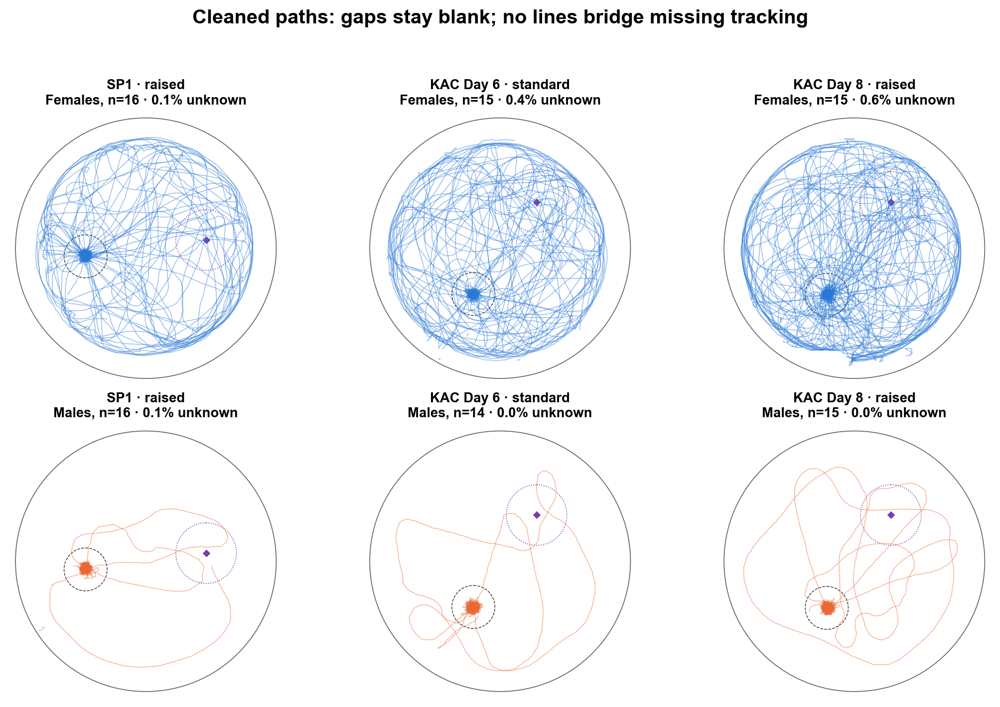
Spatial trajectories under the final model. Purple diamond & 20 cm dotted ring: P1 training platform location.
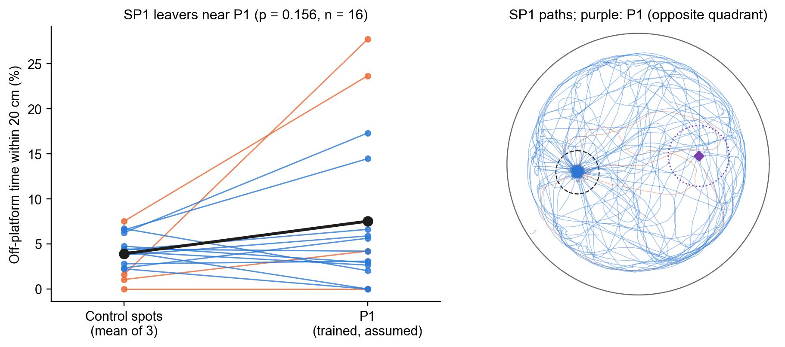
Left: off-platform dwell within 20 cm of P1 vs matched control spots per rat. Right: SP1 trajectory maps.
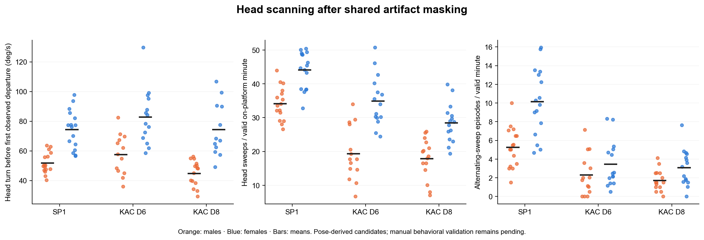
Head-turn angular velocity before departure, total sweep frequency, and alternating VTE episodes. Orange: males, Blue: females.
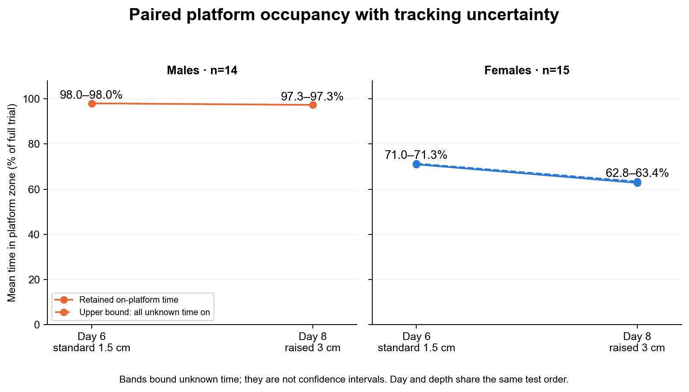
Within-subject trajectory bounds in standard vs raised water depth. Gaps and untracked intervals are strictly bounded.
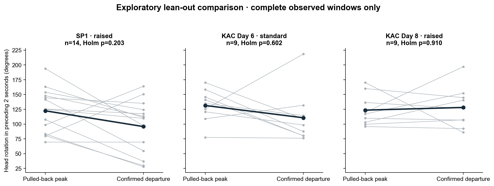
Head rotation before aborted pull-backs vs committed disembarkations.
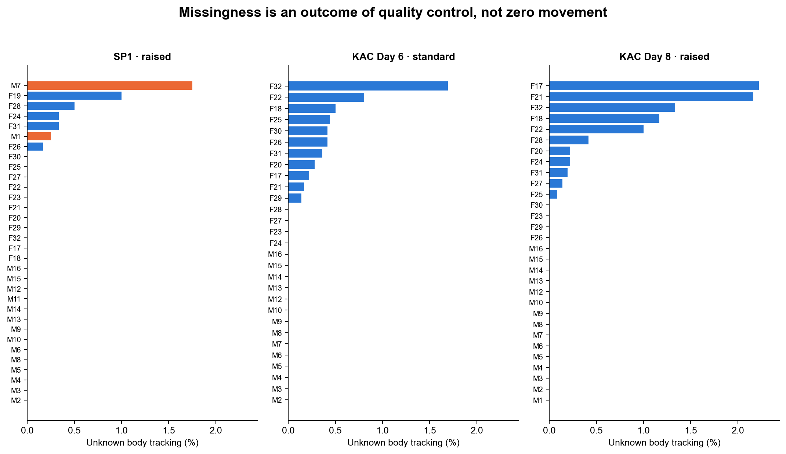
Tracking completeness per animal. Less than 1% of female time is untracked with the final rotation-augmented model.